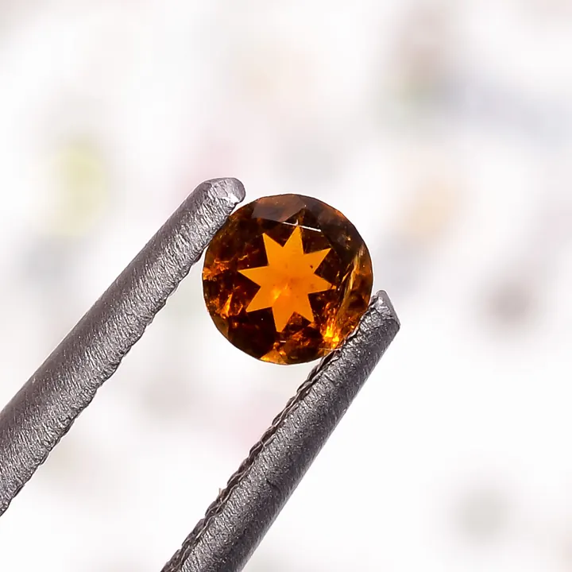

人造寶石與仿品：實驗室的雙面鏡
實驗室能複製寶石的美，卻複製不了它的稀缺——人造寶石不是壞事，壞的是「裝天然賣」。

核心定義
人造寶石分兩類：合成寶石（synthetic，成分結構與天然相同，如合成剛玉、合成祖母綠、CZ）與仿品（imitation，不同材質，如玻璃仿鑽石）。合成的化學成分等同天然——它「真」在成分、「假」在出身；仿品則連成分都不同。
常見品種：合成剛玉（火焰熔融法，紅寶/藍寶的實驗室版）、合成尖晶石、合成祖母綠（水熱法）、立方氧化鋯（CZ，鑽石仿品）、莫桑石（碳化矽，火彩超鑽石）。合成品價格僅為天然的零頭。
特徵與分類
| 材料 | 用途 | 鑑定特徵 |
|---|---|---|
| 合成剛玉 | 仿紅藍寶 | 彎曲生長紋、氣泡 |
| CZ | 仿鑽 | 比重 5.6、火彩 |
| 莫桑石 | 仿鑽 | 雙折射重影 |
| 玻璃 | 泛用仿品 | 氣泡、低折射率 |
合成品的鑑定：火焰熔融法的「彎曲生長紋」（弧狀條紋）、氣泡、異常顏色分布——實驗室製品常見這些「生長痕跡」。莫桑石（硬度 9.25）的火彩比鑽石更強——太閃反而露餡。
科學原理
火焰熔融法（Verneuil）：把氧化鋁粉在高溫火焰中熔化、滴落結晶——合成剛玉大量生產。CZ 是把氧化鋯在高溫中結晶（比重 5.6、色散 0.066 超鑽石）——它是最成功的鑽石仿品。
莫桑石（碳化矽）：雙折射 0.043——放大鏡下可見「重影」（背面棱線成雙）——與鑽石（單折射）的關鍵差異。鑑定鑽石 vs 仿品：導熱儀（鑽石導熱快）、放大鏡重影、比重——多招並用。
鑑定與鑑別方法
- 放大鏡找生長紋、氣泡（合成）
- 看雙折射重影（莫桑石）
- 比重測試（CZ 5.6 重）
- 導熱儀（鑽石導熱）
- 證書：標明 synthetic/imitation
市場行情與保養建議
行情與倫理：合成寶石與仿品是「誠實的平價選擇」——CZ 與莫桑石是鑽石的平價替身、合成紅寶是裝飾珠寶的材料。問題在「誠實揭露」：以合成/仿品冒充天然，是珠寶市場最常見的欺詐。
自保要點：異常低價即警覺、要求權威證書、學習基本鑑定（放大鏡、比重、導熱）——實驗室的雙面鏡，一面是科技，一面是陷阱。
常見誤區
合成寶石成分與天然相同（真紅寶的實驗室版）——它是「誠實標示的平價真寶石」。假貨是「冒充天然的欺詐」，不是「合成」本身。
莫桑石是碳化矽（不同成分）——它與實驗室培育鑽石（CVD/HPHT 鑽石，成分同鑽石）不同。名字像，本質不同。
冷知識
法國化學家 Verneuil 用火焰熔融法合成紅寶——寶石學的「實驗室時代」由此開啟。
立方氧化鋯由蘇聯科學家研發——曾被列為機密，後來成為全球最成功的鑽石仿品。
反直覺觀點
合成品的乾淨與完美是工業標準——天然寶石的內含物與獨特性反而成為稀缺證明。實驗室的進步，抬高了天然的溢價。
物理上莫桑石火彩（0.104）遠超鑽石（0.044）——但市場價值由稀有與文化決定，不由物理參數決定。